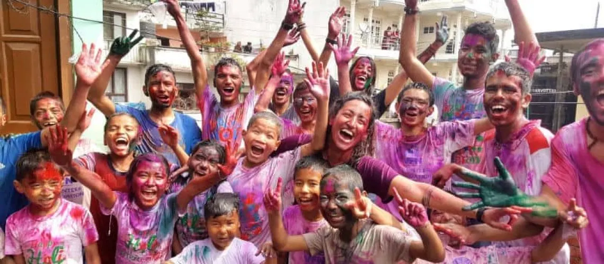

Creative
CreativeArt & Craft
Painting, cutting, gluing and modelling build fine-motor skills and proud little masterpieces.
Every activity at Stackly is designed to build skills, confidence and joy. Use the filters to explore what your child will enjoy most.
CreativePainting, cutting, gluing and modelling build fine-motor skills and proud little masterpieces.
 Movement
MovementSongs, rhymes and movement games develop rhythm, listening and body awareness.
 Discovery
DiscoveryPuppets, props and imaginative tales grow vocabulary, focus and a love of books.
 Movement
MovementRunning, balancing and team games build strong bodies and happy social skills.
 Discovery
DiscoveryGardening, leaf hunts and outdoor walks connect children with the natural world.
 Creative
CreativeSand, water, dough and textures support brain development and calm exploration.

CelebrationFestivals and cultural days teach children about community, traditions and togetherness.
 Discovery
DiscoverySimple science, building and problem-solving challenges spark early critical thinking.
 Movement
MovementGentle stretches, breathing games and quiet time help children feel calm, focused and strong.
No activities match this filter yet.
Songs, greetings and a look at the day ahead.
Phonics, numbers and small-group guided play.
Art, music, sensory play and outdoor exploration.
Storytime, reflection and getting ready for home.